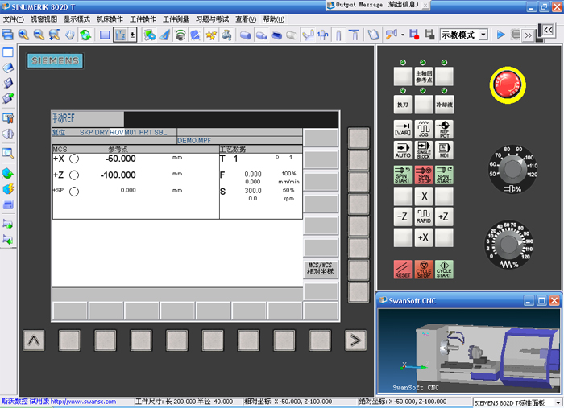
数字/字母键
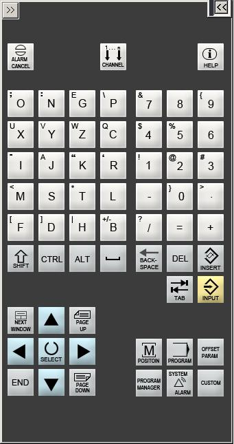
数字/字母键用于输入数据到输入区域（如下图所示）
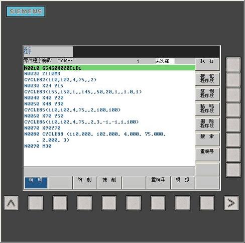
:返回键。
菜单扩展键。
报警应答键。
通道转换键。
信息键。
上档键。
控制键。
ALT键。
空格键。
删除键(退格键)。
删除键。
插入键。
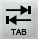
制表键。
回车/输入键。
加工操作区域键。
程序操作区域键。
参数操作区域键。
程序管理操作区域键。
报警/系统操作区域键。
未使用。
翻页键。
光标键。
选择/转换键。
| 开机 |
操作步骤 接通CNC和机床电源系统启动以后进入“加工”操作区JOG运行方式，出现“回参考点窗口”。 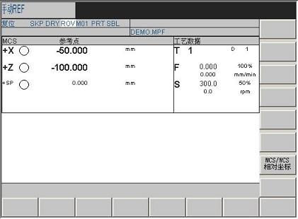 |
| 回参考点 “加工”操作区 |
操作步骤 “回参考点”只有在“ZEN”方式下可以进行。 用机床控制面板上“回参考点键”启动“回参考点” 在“回参考点”窗口中显示该坐标轴是否回参考点 选择正方向坐标轴 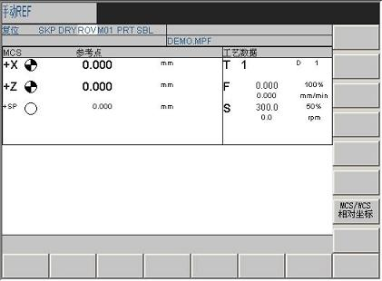 |
| “JOG”运行方式 (“加工”操作区) |
功能 在JOG运行方式中,可以 使坐标轴点动运行。 操作步骤 选择JOG运行方式 操作相应的方向键可以使坐标轴运行。 在选择“增量选择”以步进增量方式运行时，坐标轴以增量行使，步进量在屏幕上显示。 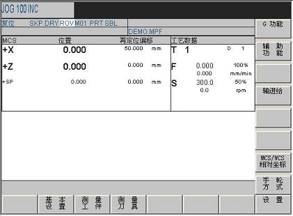 |
| “手轮”运行方式 (“加工”操作区) |
功能 在HAND运行方式中,可以 使坐标轴点动运行。 操作步骤 选择HAND运行方式 选择X或Z轴 调节手轮旋转移动距离 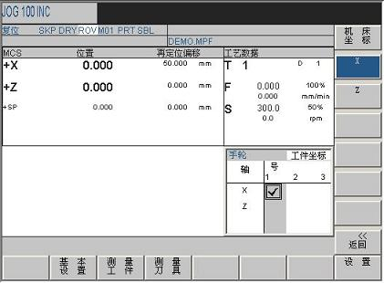 |
| MDA运行方式(手动输入)( “加工”操作区) |
功能 在MDA运行方式下可以编制一个零件程序段加以执行，但不能加工由多个程序段描述的轮廓。 操作步骤 选择机床操作面板上的MDA键。 通过操作面板输入程序段。 按动数控启动键执行输入的程序段。 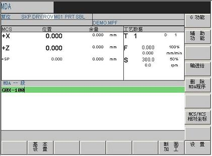 |
| 参数设定 |
在CNC进行工作之前，必须通过参数的输入和修改 对机床、刀具等进行调整： •输入刀具参数及刀具补偿参数 •输入/修改零点偏置 •输入设定数据 输入刀具参数及刀具补偿参数―“参数”操作区 功能 刀具参数包括刀具几何参数、磨损量参数和刀具型号参数 操作步骤 按“参数操作区”键后，打开刀具补偿参数窗口，显示所用的刀具清单。可通过光标键和“上一页” “下一页”键选出所要的刀具。 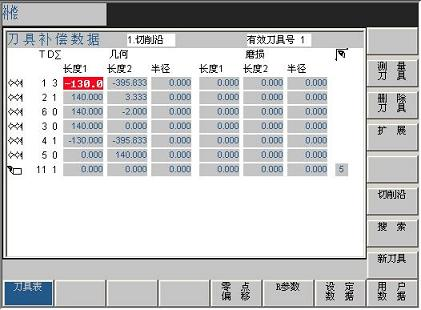 通过以下步骤输入补偿参数 •在输入区定位光标 •输入数值 按输入键确认或者移动光标 对于一些特殊刀具可以使用 键，填入全套参数 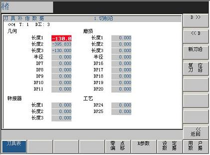 |
| 建立新刀具 |
操作步骤 该功能下有两个软键供使用分别用于选择到具类型,填入相应的刀具号. 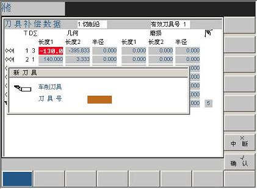 按确认键确认输入.在刀具清单中自动生成数据组零. |
| 确定刀具补偿(手动) |
功能 利用此功能可以计算刀具T未知的几何长度. 前提条件:换入该刀具.在JOG方式下移动该刀具,使刀尖到达一个已 知坐标值的机床位置,这可能是一个已知位置的工件. 操作步骤 用此键打开手动测量或半自动测量的窗口. 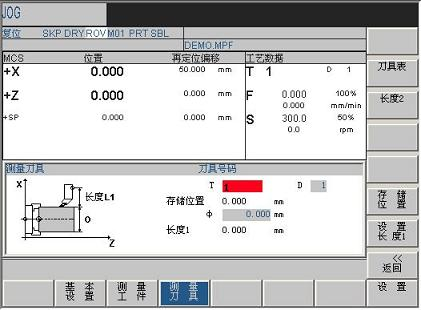 •在X0或Z0处登记一个刀具当前所在位置的数值,该值可以是当前的机床坐标值,也可以是一个零点偏移值.如果使用了其它数值,则补偿值以此位置为准. •按软键“设置长度1”或者“设置长度2”，系统根据所选择的坐标轴计算出它们相应的几何长度1或2，所计算出的补偿值被存储。 功能 在回参考点之后实际值存储器以及实际值的显示均以 机床的零点为基准，而工件的加工程序则以工件零点为基准，这之间的差值就作为可设定的零点偏移量输入。 操作步骤 通过操作软键“参数”和“零点偏移”可以选择零点偏置.屏幕上显示可设定零点偏置的情况. |
| 输入/修改零点偏置值 (“参数”操作区) |
功能 在回参考点之后实际值存储器以及实际值的显示均以 机床的零点为基准，而工件的加工程序则以工件零点为基准，这之间的差值就作为可设定的零点偏移量输入。 操作步骤 通过操作软键“参数”和“零点偏移”可以选择零点偏置.屏幕上显示可设定零点偏置的情况. 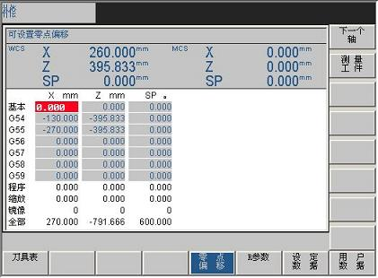 把光标移到待修改的范围 输入数值 按“向下翻页”键,屏幕上显示下一页零点偏置窗:G55和G56。 按返回键不确认零点偏置值,直接返回上一级菜单。 |
| 计算零点偏置值 |
操作步骤 按软键“测量工件”。控制系统转换到“加工”操作区，出现对话框用于测量零点偏置。 刀尖运行到工件处。在对话框“设置位置到”中输入工件边沿在坐标系位置。 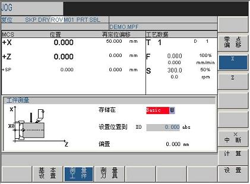 按此键计算偏移量，在偏移一栏中显示结果 按中断键退出窗口。 |
| 选择和启动零件程序 ( “加工”操作区) |
功能 启动程序之前必须要调整好系统和机床,保证安全. 操作步骤 按自动方式键选自动运行方式 打开“程序目录窗口” 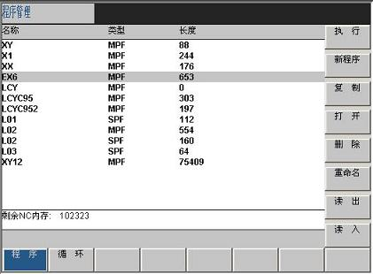 在第一次选择“程序”操作区时会自动显示“零件程序和子程序目录”。把光标定位到所选的程序上. 用“选择”键选择待加工的程序,被选择的程序名称显示在屏幕区“程序名”下。 |
| 自动运行方式 |
功能 在自动方式下零件程序可以自动加工执行,这是零件加工中正常使用的方式。 操作步骤 按自动方式键选自动运行方式。 如果有要你可以选择程序的运行状态。 循环启动. 按单步循环键,选择单步循环加工。 按 循环启动键,启动加工程序。 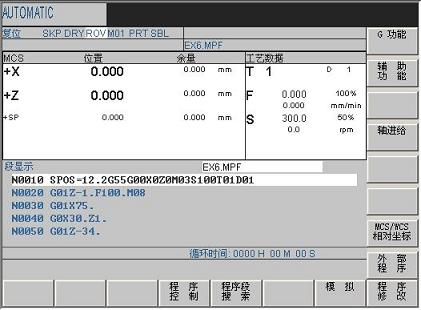 |
| 程序段搜索 (“加工”操作区) |
操作步骤 前提条件:程序已经选择. 程序段搜索所需的零件程序。 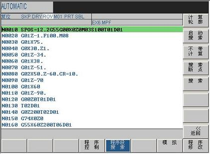 程序搜索，直至程序起始。 程序搜索，直至程序结束。 程序搜索，没有进行计算。 装载中断点。 按此键显示对话框，输入查询目标。 窗口显示所搜索到的程序段。 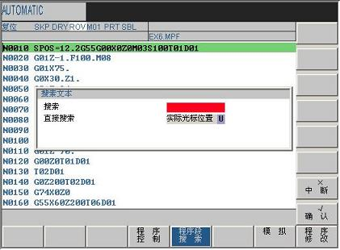 |
| 输入新程序 (“程序”操作区) |
功能 编制新的零件程序文件,开出一窗口,输入零件名称和类型。 操作步骤 选择“程序”操作区,显示NC中已经存在的程序目录. 按“新程序”键,出现一对话窗口,在此输入新的主程序和子程序名称. 在名称后输入文件类型. 按“确定”键确认输入,生成新程序.现在可以对新程序进行编辑。 用中断键结束程序的编制,这样才能返回到程序目录管理层。 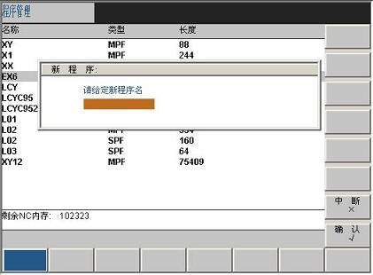 |
| 零件程序的修改 (“程序”运行方式) |
功能 零件程序不处于执行状态时,可以进行编辑 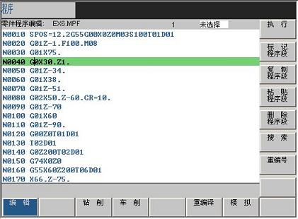 |